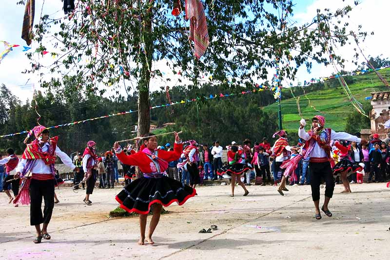
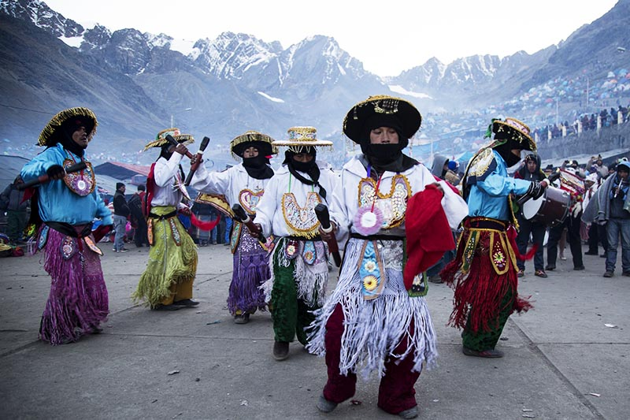

Festividades y dias de Celebracion

Carnavales cusqueños
Los carnavales son la expresión de algarabía más simbólica en el calendario cusqueño. Si bien se celebra en todos los pueblos andinos, en Cusco adquiere una característica particular por las coloridas vestimentas y las coreografías de sus pobladores.
Los carnavales se celebran los domingos en las calles de la ciudad del Cusco. Sin embargo, también se celebran en los pueblos del Valle Sagrado de los Incas: Pisac, Chinchero, Urubamba, Ollantaytambo, etc.
Los carnavales cusqueños se caracterizan por las danzas, el juego con agua y las famosas yunzas (árboles adornados con globos y obsequios para las personas).
Una semanas antes del día central de carnaval, los pobladores cusqueños celebran el ‘Día de los Compadres’ (relación amical entre los hombres) y el ‘Día de las Comadres’ (relación amical entre las mujeres).
Fecha de la fiesta: Todos los domingos de febrero.
¿Cómo ir? Visitando Cusco o cualquier pueblo del Valle Sagrado de los Incas.
Fiesta y peregrinación del Señor de Qoyllur Rit’i
La Fiesta del Señor de Qoyllur Rit’i es una de las fiestas religiosas más fervientes y antiguas de la región Cusco. Se celebra en el pueblo de Ocongate (provincia de Quispicanchis) a finales de mayo o principios de junio (la fecha es movible).
Los orígenes de la imagen del ‘Señor de Qoyllur Rit’i no son claros. Se cree que tuvo lugar hace más de 2 siglos en las cercanías del nevado Sinakara. La leyenda cuenta que un niño indígena llamado ‘Marianito Mayta’ halló amistad repentina en un niño rubio. Después de varios días, éstos fueron hallados en las nieves heladas, uno convertido en la imagen del Señor de Qoyllur Rit’i y el niño indígena muerto.
La peregrinación del Señor de Qoyllur Rit’i es la más multitudinaria de los andes peruanos. Reúne a más de 10 mil personas hasta las nieves cercanas del Ausangate, a más de 5 mil metros sobre el nivel del mar (16,400 ft.). Allí se desarrolla la fiesta religiosa caracterizada por danzas, cantos y ferviente religiosidad.
Fecha de la fiesta: Cada año en el Día de la Ascensión cristiana.
¿Cómo ir? Contratar un tour el día de la fiesta o ir por propia cuenta tomando un transporte público al pueblo de ‘Ocongate’.
